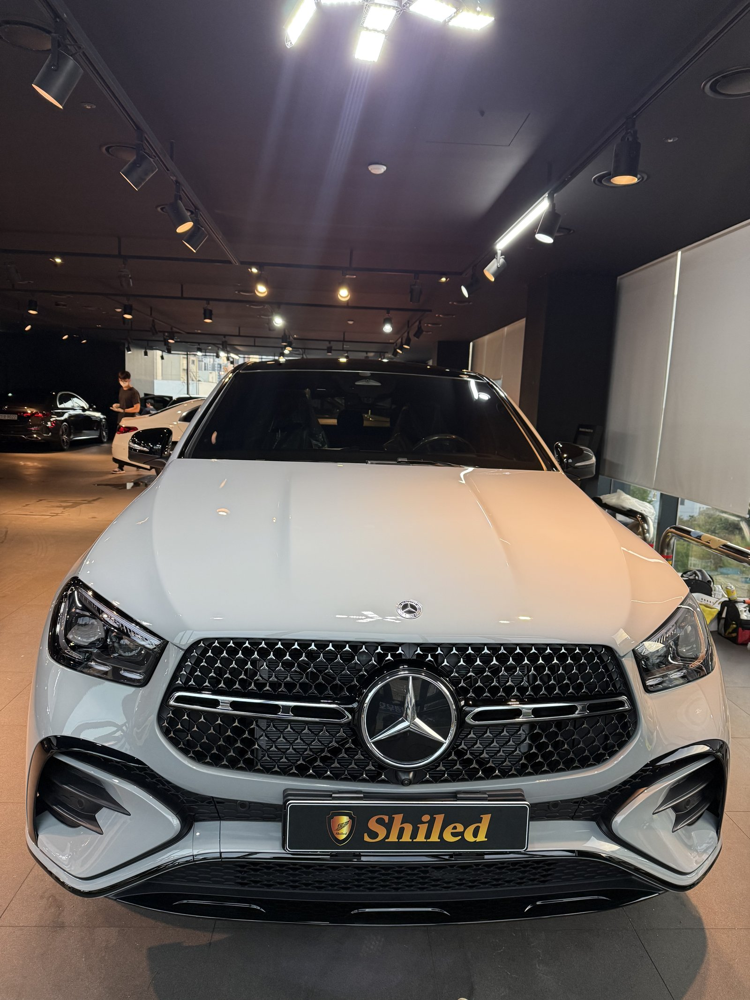
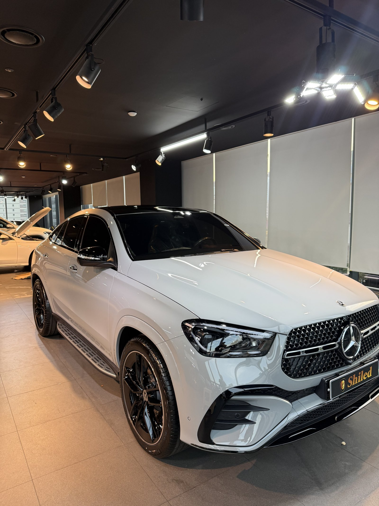
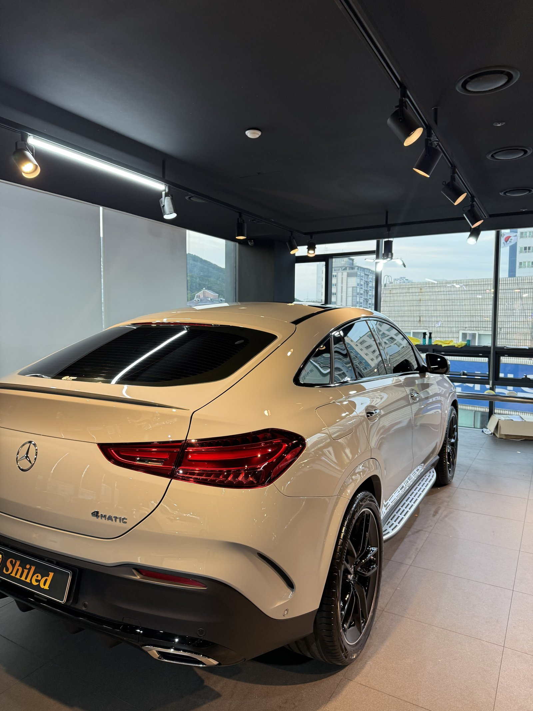
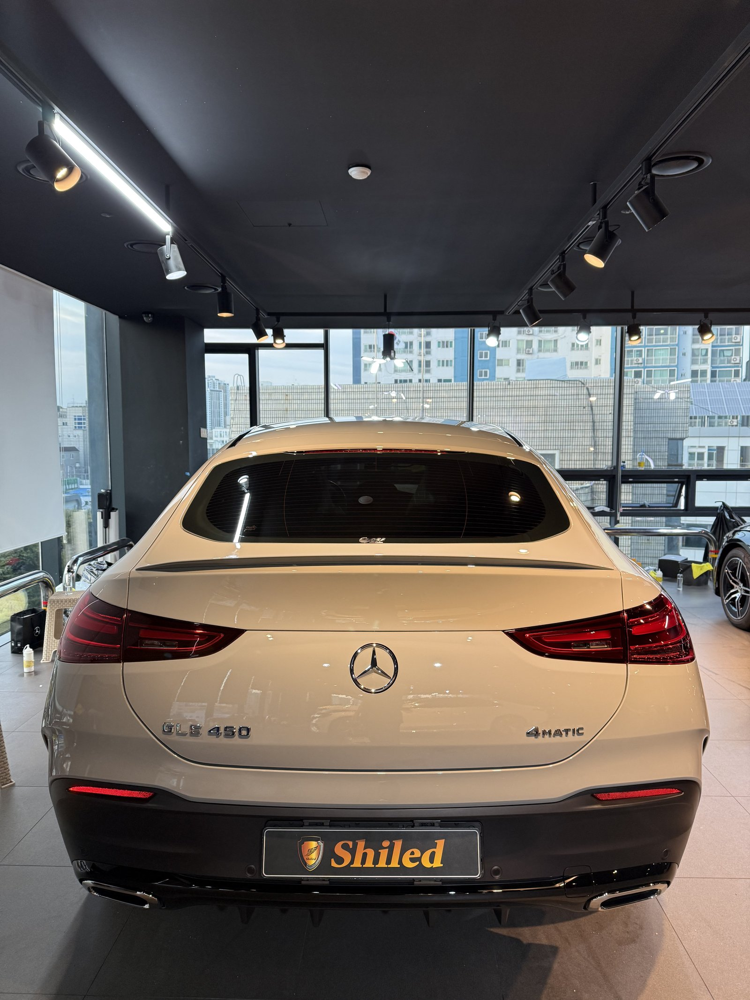
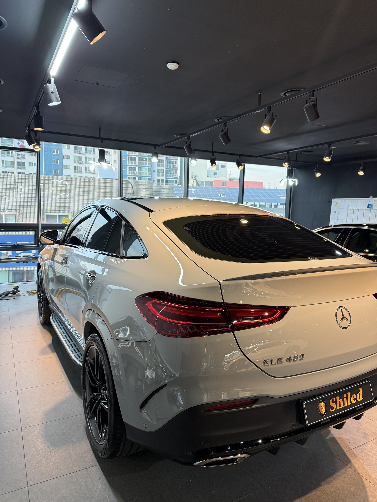
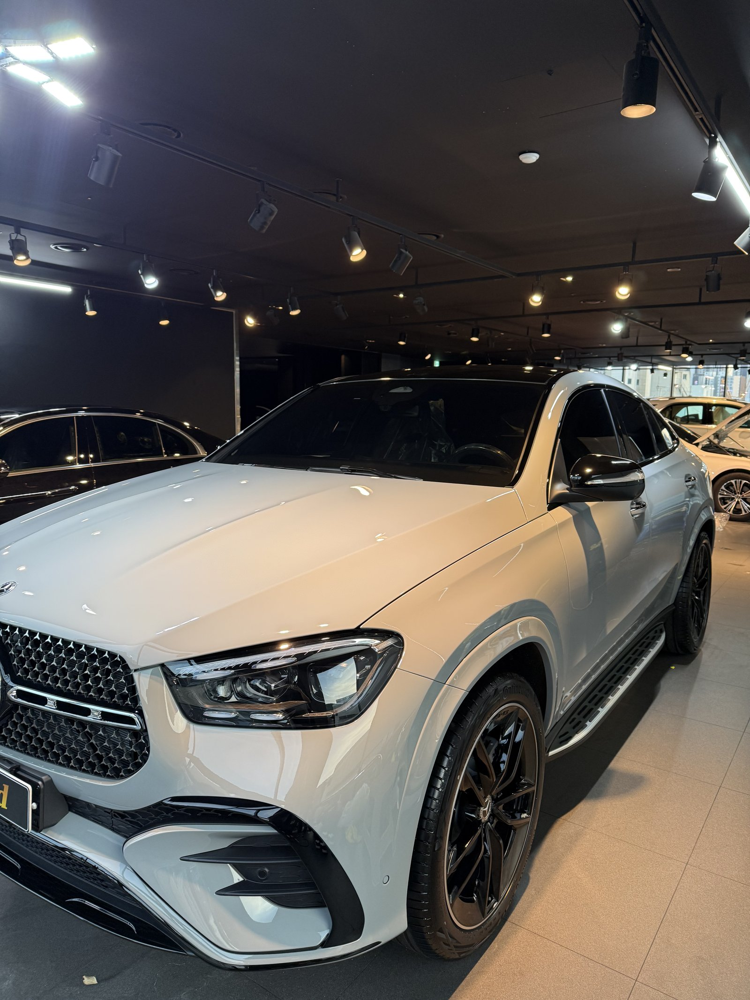
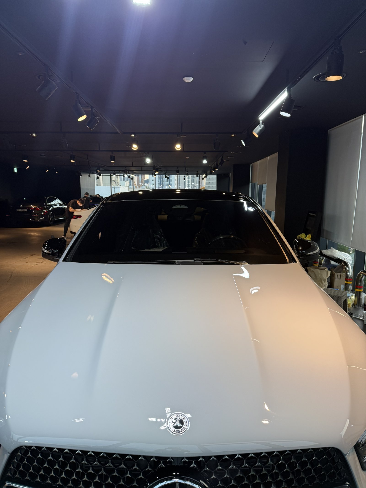
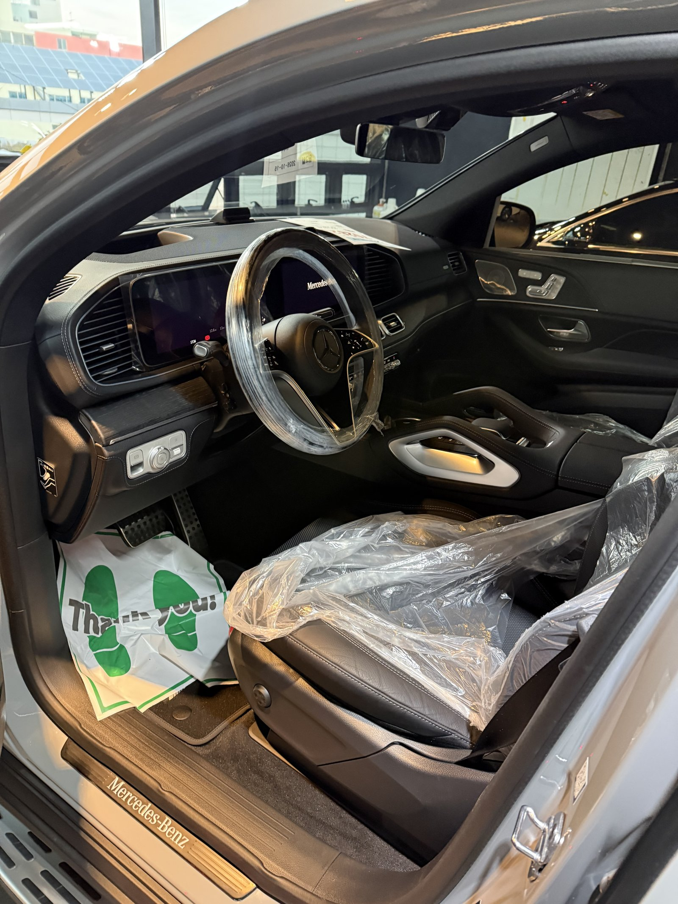
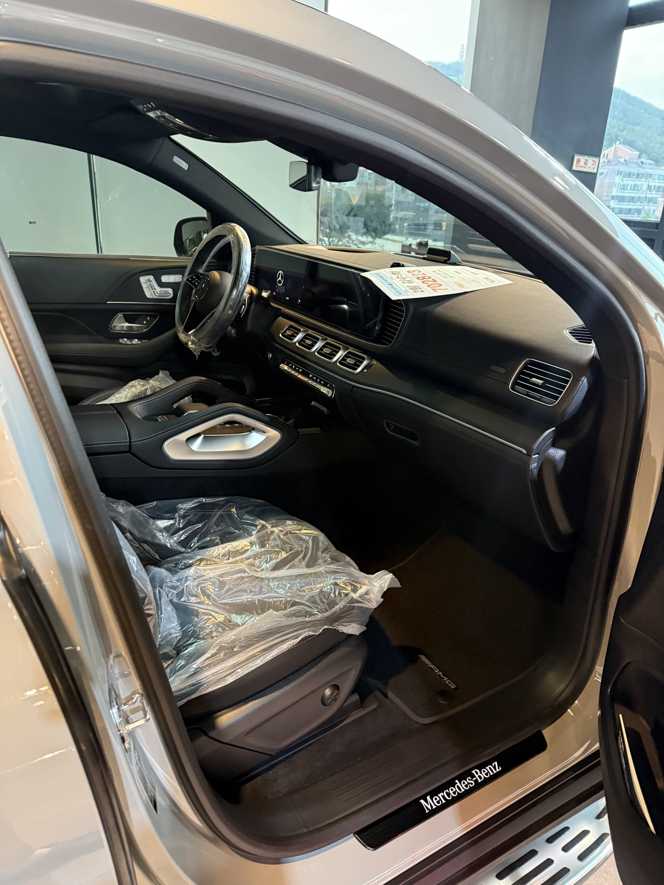
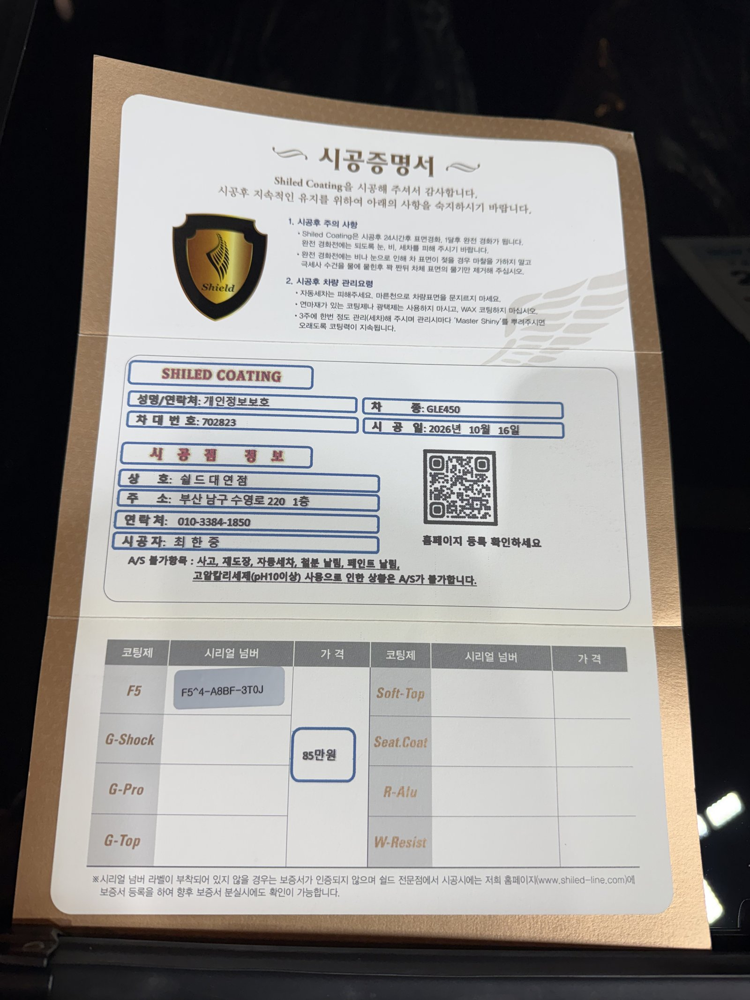

벤츠 GLE450 AMG 쿠페, 그레이 신차입니다.
출고 전에 F5로 진행했습니다.
부산 유리막코팅 작업의 GLE 쿠페 기록입니다.

GLE450 AMG 쿠페는 무엇을 먼저 보나요?
루프에서 트렁크로 떨어지는 뒷면입니다.
쿠페는 지붕선이 길게 비스듬히 내려옵니다.
빛이 그 면을 따라 길게 흐르기 때문에 작은 얼룩도 선처럼 보입니다.
그래서 뒷유리 아래와 트렁크 리드를 조명으로 따로 확인합니다.



메탈릭 그레이는 어떻게 점검하나요?
그레이는 흰색보다 오염이 덜 보이지만, 메탈릭 입자 때문에 각도마다 색이 달라 보입니다.
정면, 측면, 후면을 돌며 같은 면을 여러 각도로 봅니다.
휠아치 위 펜더처럼 곡면이 큰 곳도 빼놓지 않습니다.



기술자의 팁
쿠페형 루프는 세차 후 물이 트렁크 쪽으로 흘러내려 고입니다. 트렁크 리드와 스포일러 끝의 물기를 마지막에 한 번 더 걷어 주십시오.
GLE 쿠페 그레이에 F5를 올린 이유
F5는 색감의 깊이와 글로시함에 특화된 코팅입니다.
메탈릭 그레이는 광이 깊을수록 입자가 또렷하게 살아납니다.
코팅제는 대표가 직접 개발·제조한 제품입니다.
이번 부산 유리막코팅은 F5 싱글로 진행했습니다.


시공증명서도 함께 드립니다
모든 시공 차량에 시공증명서를 드립니다.
차종·시공일·코팅제 시리얼 번호가 적혀 있고, 홈페이지에 등록해 보증을 받으실 수 있습니다.

차종·시공일·코팅제 시리얼이 기재된 시공증명서
자주 묻는 질문
Q. 쿠페형 SUV는 어디를 더 신경 쓰나요?
A. 루프에서 트렁크로 비스듬히 떨어지는 면입니다. 빛이 길게 흐르는 자리라 얼룩이 있으면 바로 드러나 따로 확인합니다.
Q. 그레이 차량에 F5를 고른 이유는 무엇인가요?
A. F5는 색감 깊이와 글로시함에 특화된 코팅입니다. 메탈릭 그레이의 입자감을 또렷하게 살리는 데 맞춘 선택입니다.
Q. 같은 GLE450 쿠페인데 G-TOP과 F5는 어떻게 다른가요?
A. G-TOP은 발수·방오, F5는 색감과 광에 강점이 있습니다. 관리 편의를 먼저 볼지 색감을 먼저 볼지로 고르시면 됩니다.
Q. 왜 출고 전에 코팅하나요?
A. 도장면이 가장 깨끗할 때 올린 코팅이 가장 오래갑니다. 운행과 세차로 잔기스가 생기기 전에 입혀두는 것이 핵심입니다.
Q. 쉴드광택 위치와 예약은 어떻게 하나요?
A. 부산 남구 유엔로220 1F 쉴드광택입니다. 예약·상담은 010-3384-1850, 대표 최한중이 직접 상담하고 책임 시공합니다.
새 차일수록 시작점이 다릅니다. 가장 깨끗할 때 입혀두십시오.
제품을 직접 만드는 사람이 직접 시공합니다.
부산에서 신차 유리막코팅을 고민 중이시면 편하게 연락 주십시오.
어떤 차를 타냐보다 어떻게 타냐가 중요합니다~!
시공 중에는 전화를 받지 못할 때가 많습니다.
카카오톡으로 차종과 원하시는 시공을 남겨주시면 확인 후 답변드립니다.
쉴드광택 · 부산 남구 유엔로220 1F · 대표 최한중